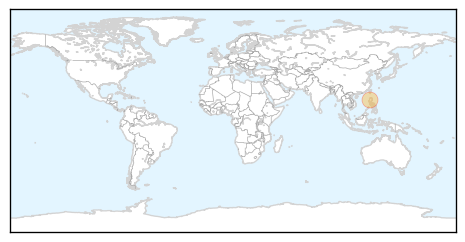
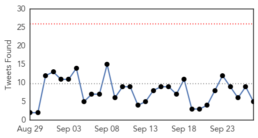
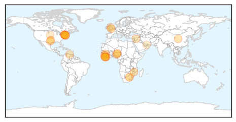
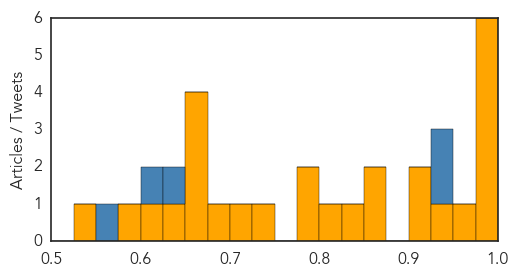

MERS
30-Day Web Trend
0 alerts, 0 warnings

30-Day Twitter Trend
0 alerts, 0 warnings
Article Locations
Article Confidences

Top Articles:
Top Tweets:
- 0.666
- AFD blog `Saudi MOH Reports No New MERS Cases' MERS-CoV http://t.co/PrH9n7WUkj
Ebola
30-Day Web Trend
0 alerts, 0 warnings
30-Day Twitter Trend
0 alerts, 0 warnings

Article Locations
Article Confidences
Top Articles:
- 0.994
- Airport Screening 'Doesn't Really Pick Up Ebola'
- 0.989
- Deforestation cited in increased bat-to-human Ebola transmission
- 0.988
- Teen reels in huge Google award after creating ebola test kit
- 0.988
- Ebola in Dallas: Stories, videos, photos, graphics and resources from The Dallas Morning News
- 0.981
- Oxford to conduct human trials of Ebola vaccine
- 0.980
- Doctor Cured of Ebola Works for Cure
- 0.965
- Gaffes slowed Ebola response, AP finds
- 0.933
- 'Human security depends on health security,' Ban says, calling on nations to be proactive
- 0.917
- Liberia Needs Two Years To Regain Economic Footing After Ebola Epidemic
- 0.913
- China's aid to Ebola-affected countries wins praise
- 0.873
- Foreign Report: Warnings for Turkey, Saudi Arabia, Venezuela
- 0.855
- Partnership Aims to Bolster Local Health Care Providers
- 0.837
- Looking back, Dallas Ebola crisis showed cost of fear, value of leadership
- 0.814
- American doctor who battled Ebola returns to Liberia to continue work
- 0.798
- UN launches new joint partnership to help countries close gaps in primary health care
- 0.790
- Refugee Influx Stokes Norwegians' Fears of Contagious Disease
- 0.730
- S. Africa to co-host China-Africa health forum
- 0.720
- Press Release: Chip-based technology enables reliable direct detection of Ebola virus: Hybrid device integrates a microfluidic chip for sample preparation and an optofluidic chip for optical detection
- 0.684
- S. Africa to Co-Host China-Africa Health Forum
- 0.664
- WHO takes Nigeria off global list of polio-endemic countries
- 0.663
- World Health Organization takes Nigeria off global list of polio-endemic countries
- 0.661
- Connecticut Teen Invented Device That Could Help Thousands of Potential Ebola Victims
- 0.653
- Giant Viruses Are Hiding in Permafrost, But Not for Long
- 0.631
- Missing Ebola Vehicles: Audit Report Cites Inconsistencies
- 0.604
- Dr Abdelmoneim addresses Capital Club Members as part of 2015 speaker series
- 0.580
- Surge in the number of cases of terrifying hospital superbug after NHS relaxes hygiene rules (UK)
- 0.548
- Greenwich HS Student Wins Google Global Science Fair
Top Tweets:
- 0.995
- Sierra Leone's last known Ebola patients leave hospital - Yahoo News http://t.co/hN3KJnh7Zs ebola EVD
- 0.995
- Sierra Leone's last known Ebola patients leave hospital - Yahoo News http://t.co/9hmcIe5WxU ebola EVD
- 0.939
- Sierra Leone's last known Ebola patients leave hospital - Yahoo News http://t.co/Vn6chV4fjD
- 0.880
- Missteps fueled fear as Ebola arrived in Dallas - Dallas Morning News http://t.co/csegteor4Q ebola EVD
- 0.843
- Doctor Cured of Ebola Works for Cure - Valley News http://t.co/e68lMfmGFi ebola EVD
- 0.736
- BBC wins big by betting on chat app to deliver Ebola tips - Vanguard http://t.co/Q3UNmNrRNv ebola EVD
- 0.720
- Dallas Ebola crisis showed cost of fear, value of leadership - Dallas Morning News http://t.co/X0W8EphPPw ebola EVD
- 0.720
- Dallas Ebola crisis showed cost of fear, value of leadership - Dallas Morning News http://t.co/262nWgxHyr ebola EVD
- 0.664
- Incredible volunteers who put their lives on the line to stop Ebola outbreak ... - http://t.co/L4gbwrglxU http://t.co/nrwVIpNPEm ebola EVD
- 0.657
- Google gives teen huge award for creating cheap ebola test kit - Nature World Report http://t.co/TuNsJdK8OI ebola EVD
- 0.539
- Airport Screening 'Doesn't Really Pick Up Ebola' - http://t.co/HFdpoHu7e5 http://t.co/IjaLePqXGZ ebola EVD